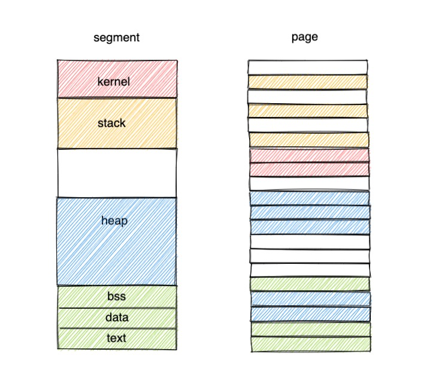
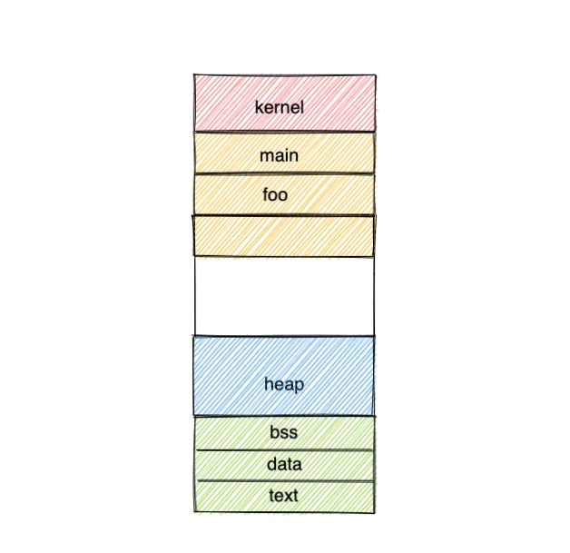
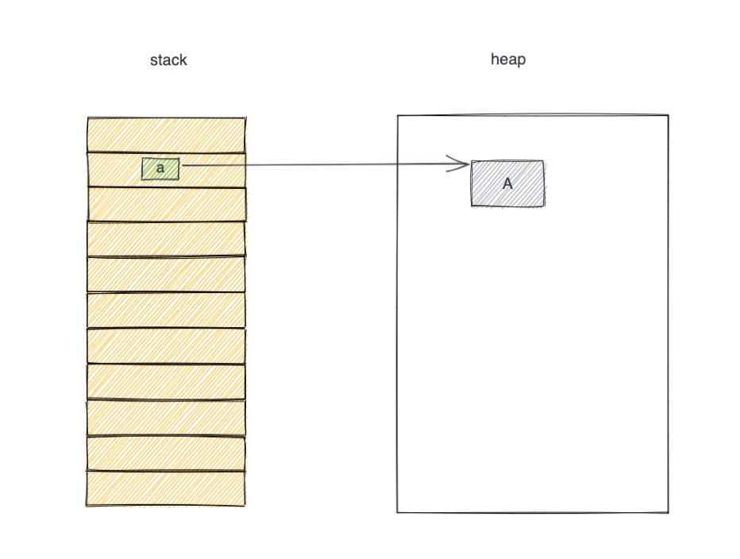
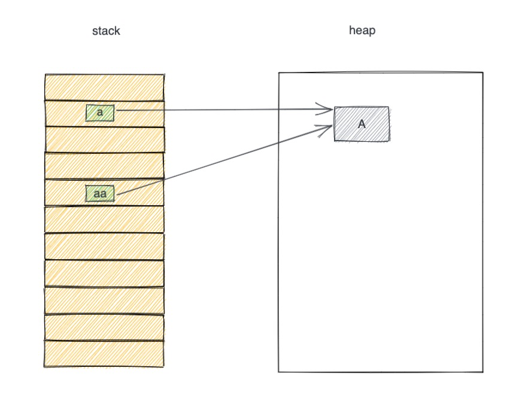
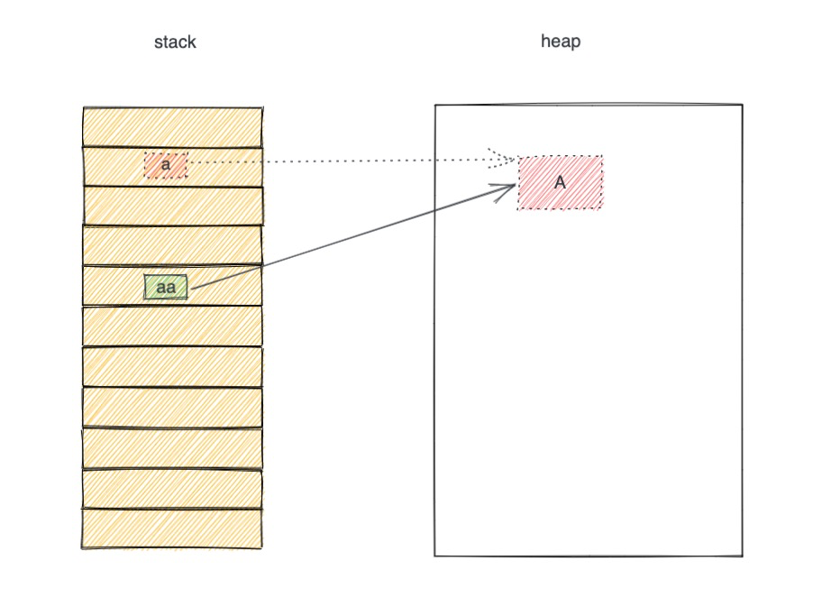
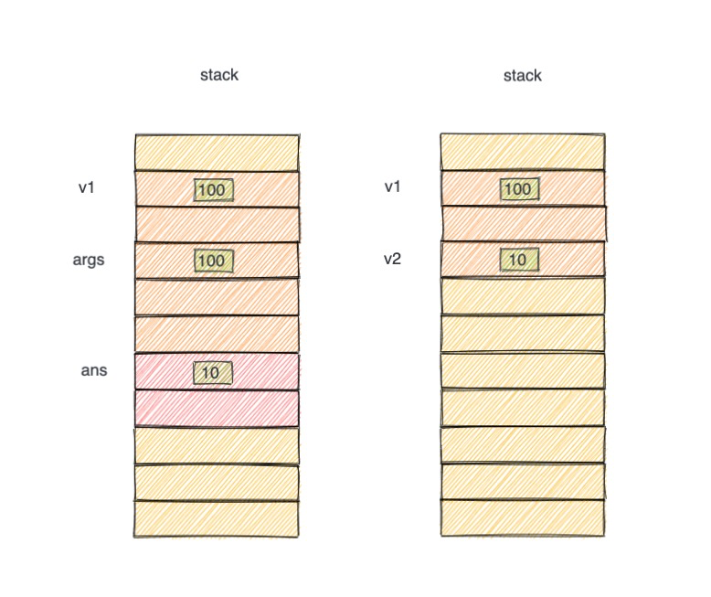

浅析Rust所有权Ownership (一) – 栈堆与位置绑定¶
内存¶
现在计算机多数基于冯诺依曼体系结构。系统由运算器控制器(CPU)、存储器(Memory&Disk), 输入输出(IO)设备(keyboard，Screen)组成。对于软件而言，程序的执行是 CPU 从内存中获取指令(Instruction) 或数据(Data)进行运算。
为了方便高效的让软件使用硬件资源，操作系统(OS)在中间扮演重要角色。OS 将硬件资源进行虚拟化(Virtualization)，提供抽象给软件使用。例如，OS 对 Memory 的抽象，就是让进程以为自己是独占 Memory，与其他进程没有关系。OS主要通过虚拟内存实现内存管理，主要方式是分页(Page)和分段(Segment)。
分页¶
物理内存本身是一个个字节的小单元。OS 将其中一些连续的单元合并成一个页(page)，如4K大小为一页。只要知道每一页的起始地址(start)，和页内偏移地址(offset) 就可以定位具体的地址。分页是为了OS高效的管理内存，比如解决外部碎片问题等。
分段¶
程序运行的时候，进程的视角自己是独占整个存储空间。进程为了方便自己使用内存，会把内存分成若干个大小不一的段。
栈(Stack): 存储局部变量，函数调用
堆(Heap): 动态变化大小的数据
代码段(Code): 程序源代码
数据段(Data): 常量或者静态数据
这些段也是 OS 抽象分配出来给进程使用。源代码通过编译器处理，以进程方式运行程序的时候，需要合理使用内存段。对于编程开发人员而言，编写代码主要面向的是内存的 Stack 和 Heap 的操作。有的高级语言又帮程序员进行了 Heap 内存管理。
如上图，进程的视角，内存分为若干段。每个段，实际上被 OS 安插到多个页当中。程序里看见的地址，实际上是 OS 提供的 虚拟地址，而不是内存的物理地址。虚拟地址到物理地址，通过由 MMU 的设备进程转换处理。
Stack 与 Heap¶
开发者编程主要与 Stack 和 Heap 打交道。Stack 是一段连续的内存，分为多个大小一样的栈单元，也是遵循栈这种数据结构的特点，即先进后出(FILO)。函数调用会创建栈帧(Stack Frame)入栈(push) ，栈帧可能包含多个栈单元，每个栈帧又存储了对应函数的局部变量，参数等数据。当然后返回的时候，相应栈帧出栈(pop)。
上图有两个函数，main 和 foo 函数，先调用 main，创建 main 栈帧，同时 main 函数里的参数，局部变量也相继入栈。然后调用 foo ，再创建 foo 栈帧，foo 运行结束之后，foo栈帧内的栈单元的元素相继出栈。由此可见，stack 上存储的值，随着入栈出栈相应的创建和释放，这个过程伴随函数调用，几乎是全自动。
为了方便理解，我们稍后的描述和示例图将忽略栈帧和栈单元。把出栈入栈当成一种线性内存的操作即可，也忽略栈寄存器的描述。
既然 stack 的存储的元素可以方便的自动创建和释放，那么为什么还需要 heap 呢？实际上 stack 这样连续的内存，它的增长和缩减都是有线性有方向的。而程序里还有一类数据的增长是不确定大小。这类数据只能存储在 heap。heap 可以自由的向 OS 申请空间。
如 C 语言使用 void *malloc(size_t size) 函数申请 heap 内存， 返回 void *指针类型。使用void free (void* ptr)函数释放 heap 内存。
rust 可以模拟如下，unsafe 代码只是为了模拟说明，真实的开发过程不会这样创建 Box。
use std::alloc::{alloc, Layout};
use std::ptr;
fn main(){
unsafe {
let ptr = alloc(Layout::new::<i32>()) as *mut i32; // 堆上申请空间，返回指针
println!("ptr({:p})={:?}", &ptr, ptr);
ptr.write(100); // 通过指针写入值
let v3 = Box::from_raw(ptr); // 创建 Box 结构（胖指针）
println!("v3({:p})={:?}", &v3, v3);
}
}
由此可见。尽管 heap 内存可以自由创建，但是操作的对象都是存储在 stack 上的指针。其他的高级语言也类似，stack 上的变量是一个指针，存储的是 heap 内存地址，也就是通过 stack 来管理 heap。 所以我们更多的关注 stack 上数据是如何变化，且因为 stack 的变化引发的 heap 上关联的内存的变化。
相比 stack，heap 内存的使用更加灵活自由。自由又意味着需要精确控制。
stack 上的指针变量 *a 指向了 heap 内存上的一块数据 A。如果 *a 出栈随即自动销毁，那么需要释放 heap 上的 A。如果不释放，则会造成内存泄漏。一个解决方案就是销毁 *a 的时候，同时释放 A。这种情况很完美。
另外一种情况—共享内存。如果又创建了一个指针变量 *aa，它也指向 A 以共享 heap 上的数据。那么如果释放 *a 的时候，释放了 A。那么 *aa 就会指向一个不存在的数据，造成悬垂指针
使用 golang 模拟下面的情况：
func main() {
A := []int{1, 2, 3} // 创建一个引用数据
fmt.Printf("A(%p)=%v\n", &A, A)
fmt.Printf("A[0](%p)=1\n", &A[0])
var a *[]int
a = &A // a 指针指向 A
fmt.Printf("a(%p)=%v\n", &a, a)
fmt.Printf("a[0](%p)=1\n", &(*a)[0])
var aa *[]int
aa = &A // aa 指针也指向 A a 和 aa 共享 A
fmt.Printf("aa(%p)=%v\n", &aa, aa)
fmt.Printf("aa[0](%p)=1\n", &(*aa)[0])
*aa = nil // 释放 A
fmt.Printf("a(%p)=%v a==nil: %v aa == nil: %v \n", &a, a, *a == nil, *aa == nil) // *a 变成了悬垂指针
}
此外，像 C 语言。重复释放也会带来问题。*aa 出栈的时候，再次释放 A，如果此时 A 已经被别的指针使用了。那么就会释放了不应该释放的内存。为了解决如果关联 heap 内存。常见有两个流派：
手动管理： C 等底层语言要求程序员手动控制，自行安排 malloc 和 free 的调用，这种方式容易出错。需要精确的匹配创建和销毁。
GC垃圾回收：Python，Java，Go等高级语言，使用 GC 算法，每次 stack 上对 heap 的引用都计数，当引用增加的时候计数+1，反之-1。运行的时候，GC会扫描内存，对于那些没有stack 引用的 heap 内存进行释放。
不同于上述两种流派，Rust借鉴多种方案后提出了所有权(Ownership)和生存期(Lifetime)的方式管理内存。
Ownership¶
开门见山，Rust 的 Ownership 有下面三条规则：
一个值只能被一个变量所拥有，这个变量被称为所有者（Each value in Rust has a variable that’s called its owner）
一个值同一时刻只能有一个所有者（There can only be one owner at a time）
当所有者离开作用域，其拥有的值被丢弃（When the owner goes out of scope, the value will be dropped）
对于上述的理解，使用代码和图示来说明。
位置与值¶
rust 中 ownership 的变化与位置(Place)绑定(Binding)有关。这里的位置类似其他语言的变量。主要有三种形式：变量赋值，函数传参，函数返回。
fn main() {
let v1 = 100; // v1 = 100
let v2 = foo(v1); // args = v1 v2 = ans
}
fn foo(args: i32) -> i32 {
let ans = 10;
return ans;
}
变量赋值：将 100 与 位置(变量) v1 进行绑定
函数传参：将 v1 与 位置(变量) args 进行绑定
函数返回：将 ans 与 位置 v2 进行绑定
模式匹配也会创建 位置，其形式和变量赋值类似，为了方便理解，本文的位置和变量表示一个意思。
如何理解 rust 的位置和值呢？下面图示是其过程内存布局示意图:
变量赋值：
let v1 = 100;在 stack 上创建一个位置，命名为 v1，存储的值是100。这是一个 stack 内存地址。其关系是值100和位置v1进行绑定。此时值 100 的 ownership 是属于位置 v1。位置和值是一一对应。v1 也就是值 100 的所有者。函数传参：
foo(v1);函数调用的时候，stack 会创建一个新的位置 args，并将 v1 的值进行绑定。这里是一个 Copy 语义。稍后会介绍Copy语义，当前只要知道 args 绑定了一个 v1 的值 100。同时 foo 函数执行的时候，其内部也有一个赋值绑定表达式，因此也会出现一个 位置 ans 和 值10 的绑定。函数返回：在 foo 函数调用返回的时候，其局部位置 ans 会返回给调用地址，接收的是 main 函数的里的 v2。foo函数调用结束，其自身占用的调用栈也会相应的pop出栈。因此如图示右边所示。
main 函数的花括号，就是位置 v1 的作用域，当 main 函数运行完毕。v1 出栈，其对应的值 100 也就是被释放了。符合上述的三条规则。
位置与胖指针¶
rust中，v1 是 i32 基础类型，其值存储于 stack。使用 Box，可以让 i32 强行存储于 heap。Box 是 rust 提供的一种智能指针(Smart Pointer)，存储了 heap 内存的指针，同时还存储了 heap 上数据结构的一些其他信息。因此也称之为胖指针(Fat Pointer)。
fn main() {
let v3 = Box::new(100);
}

上述的表达式语句，创建了一个新的位置 v3。v3 位置的是是一个 Box 结构体。同时在 heap 也创建一个位置 v4。v4 的值跟 100 绑定。与 v1 不一样，Box 结构体有一个指针 ptr，其值是位置 v4。这和 Java Python等高级语言一样。stack 上的变量是 heap 上的一个地址。
let v3 = Box;
let v4 = 100;
let Box.ptr = v4;
v3 是 Box 的所有者，v4 是 100 的所有者, v4 又和 Box 的指针字段绑定，等价于 v3 持有 v4 的 Ownership。当 v3 离开作用域的时候，v3 的值 Box 会被释放，box 释放也等效了其内部的 ptr 指针离开作用域，即 v4 离开作用域，那么 v4 对应的值也会被释放。
Rust 进行高度抽象，v4 只是作为帮助理解。实际上编译器生成的指令会优化掉。
初看 Rust的做法和其他语言也没有特别的差别。是因为现在 heap 的值跟 stack 的指针一一应。不使用共享内存，因而还没有 heap 内存管理的问题。稍后将会介绍 rust 如今解决安全的解决内存管理，且保持十分高效的运行时。
总结¶
编程开发人员使用的大多数语言中，像C/C++这样的底层语言需要手动或半自动的管理内存。对开发者十分不友好。Python Java Golang 这种使用 GC 的机制，又存储运行时的 STW 问题。
Rust 通过 Ownership 和 Lifetime 进行内存管理。理解 ownership 的前提是需要理解 rust 的内存中 stack 和 heap 上位置和值的绑定关系。主要有三种：变量赋值，函数传参，函数返回。不同于别的语言，rust的位置绑定往往与 ownership 紧密相关。因此为了区分，少以后的描述也不使用变量，赋值等语言。取而代之是位置，绑定等词汇。